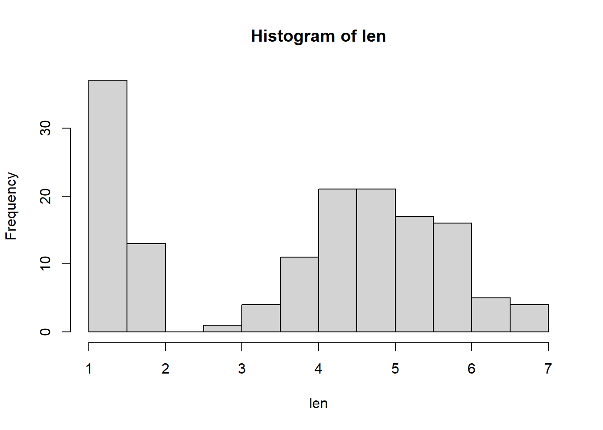

Intro to NRES 710
Welcome!
Many PhD-granting institutions make students meet a language requirement. These days, most of them allow statistics as the language requirement! So, we can think of this class as learning the language of statistics- and another one thrown on just for fun- computer programming in R!
Both languages- statistics and computer programming- both begin and end with pure logic! Learning these languages is easier than learning a spoken language in many ways, because spoken languages often don’t follow pure logic. Statistics and computer programming are nothing if they don’t make logical sense!
Download the R code for this lecture!
To follow along with the R-based lessons and demos, right (or command) click on this link and save the script to your working directory
What is statistics

Statistics is the process of making inference about a property of a population (a parameter) from a representative sample.
It’s not just you. Many ecologists are fuzzy about the language, and even the concepts!
Why do we need stats class?
Side note: my background in statistics.
I tend to recommend that grad students take the least coursework possible- but I think stats is an exception. I think it’s more efficient, fun, and rewarding to learn stats as a group rather than on your own. I hope you agree by the end of this class!
Types of data
Statistics is fundamentally about making sense of data. Therefore understanding statistics requires starting with an understanding types of data.
What types of data are there?
1. Categorical (Can be quantitative or qualitative) – represents characteristics, can be logical a. Nominal (labels, > 2 categories) b. Dichotomous (2 categories) c. Ordinal (ordered units) 2. Quantitative a. Discrete: can be counted (number of individuals in a population) b. Continuous: not countable, but can be measured (total body length) i. Interval data: the difference between two values is meaningful but zero doesn’t mean the absence of a thing (e.g., temperature in Celsius) ii. Ratio: zero means complete absence (e.g., temperature in Kelvin). If zero means absence, then the ratio between two values is meaningful (something that weighs 4 g has twice the mass of something that weighs 2 g). Note that you can’t say that for interval data (e.g., something with a temperature of 4 C doesn’t have twice the heat of something at 2 C).
Why do we need to know about data types? We have to deal with these data types differently!
For example:
- Nominal data: frequencies, pie charts
- Continuous data: calculate percentiles, mean and variance.
Messing around with data types in R:
Let’s explore some existing data that is easily obtained in R: iris, mtcars, titanic (install titanic package first)
We will also simulate some data on our own!
Notes about working in R:
R is open source, so it is ‘messy’. Packages are being added all the time, there are millions of ways to accomplish the same task.
R is incredibly powerful and feature rich- you are NOT expected to memorize much, just know that the answer is always a few clicks away!
When in doubt, Google it!!
Here is a base R cheat sheet (from RStudio)- this is a great reference for most of the basic tasks you will need to perform in R. Keep it handy!
Learn to use R scripts- and save the R script frequently!! This is the primary record of what you’ve done and allows you and other scientists to reproduce your models, analyses and visualizations.
First R demo!
NOTE: for those wishing to follow along with the R-based demo in class, click here for an R-script that contains all of the code blocks in this web-based lecture.
All of you should have R and RStudio installed on your computers. See the links page for some useful references. I will be leading “bootcamps” on using R in two upcoming Saturday afternoons (TBD)- please consider attending if you don’t have much experience in R!
First of all, R can be used as a calculator. Try it!
2+2 # use R as a calculator## [1] 4four <- 2+2 # define your first variable!
four## [1] 4five<-2+2 # you can make mistakes and define misleading labels- R will let you!
five<-2+3
five<-four+1 # you can use variables to define new onesQ: what are those hashtags doing in the above code block? [these are ‘comments’ and they are super helpful- use them early and often!]
Note: Be careful about creating object names. Try to avoid any names that might already be defined as a function- like ‘sum’.
Use variable names that will not confuse you.
Use Rstudio’s autofill feature to avoid typos!
Variable names can not start with a number - e.g., 5pt
Explore R’s existing datasets
# data() # 'uncomment' this command and run it to explore built-in datasetsLet’s start by working with the famous iris dataset:
iris # this is a data frame- the basic data storage type in R## Sepal.Length Sepal.Width Petal.Length Petal.Width Species
## 1 5.1 3.5 1.4 0.2 setosa
## 2 4.9 3.0 1.4 0.2 setosa
## 3 4.7 3.2 1.3 0.2 setosa
## 4 4.6 3.1 1.5 0.2 setosa
## 5 5.0 3.6 1.4 0.2 setosa
## 6 5.4 3.9 1.7 0.4 setosa
## 7 4.6 3.4 1.4 0.3 setosa
## 8 5.0 3.4 1.5 0.2 setosa
## 9 4.4 2.9 1.4 0.2 setosa
## 10 4.9 3.1 1.5 0.1 setosa
## 11 5.4 3.7 1.5 0.2 setosa
## 12 4.8 3.4 1.6 0.2 setosa
## 13 4.8 3.0 1.4 0.1 setosa
## 14 4.3 3.0 1.1 0.1 setosa
## 15 5.8 4.0 1.2 0.2 setosa
## 16 5.7 4.4 1.5 0.4 setosa
## 17 5.4 3.9 1.3 0.4 setosa
## 18 5.1 3.5 1.4 0.3 setosa
## 19 5.7 3.8 1.7 0.3 setosa
## 20 5.1 3.8 1.5 0.3 setosa
## 21 5.4 3.4 1.7 0.2 setosa
## 22 5.1 3.7 1.5 0.4 setosa
## 23 4.6 3.6 1.0 0.2 setosa
## 24 5.1 3.3 1.7 0.5 setosa
## 25 4.8 3.4 1.9 0.2 setosa
## 26 5.0 3.0 1.6 0.2 setosa
## 27 5.0 3.4 1.6 0.4 setosa
## 28 5.2 3.5 1.5 0.2 setosa
## 29 5.2 3.4 1.4 0.2 setosa
## 30 4.7 3.2 1.6 0.2 setosa
## 31 4.8 3.1 1.6 0.2 setosa
## 32 5.4 3.4 1.5 0.4 setosa
## 33 5.2 4.1 1.5 0.1 setosa
## 34 5.5 4.2 1.4 0.2 setosa
## 35 4.9 3.1 1.5 0.2 setosa
## 36 5.0 3.2 1.2 0.2 setosa
## 37 5.5 3.5 1.3 0.2 setosa
## 38 4.9 3.6 1.4 0.1 setosa
## 39 4.4 3.0 1.3 0.2 setosa
## 40 5.1 3.4 1.5 0.2 setosa
## 41 5.0 3.5 1.3 0.3 setosa
## 42 4.5 2.3 1.3 0.3 setosa
## 43 4.4 3.2 1.3 0.2 setosa
## 44 5.0 3.5 1.6 0.6 setosa
## 45 5.1 3.8 1.9 0.4 setosa
## 46 4.8 3.0 1.4 0.3 setosa
## 47 5.1 3.8 1.6 0.2 setosa
## 48 4.6 3.2 1.4 0.2 setosa
## 49 5.3 3.7 1.5 0.2 setosa
## 50 5.0 3.3 1.4 0.2 setosa
## 51 7.0 3.2 4.7 1.4 versicolor
## 52 6.4 3.2 4.5 1.5 versicolor
## 53 6.9 3.1 4.9 1.5 versicolor
## 54 5.5 2.3 4.0 1.3 versicolor
## 55 6.5 2.8 4.6 1.5 versicolor
## 56 5.7 2.8 4.5 1.3 versicolor
## 57 6.3 3.3 4.7 1.6 versicolor
## 58 4.9 2.4 3.3 1.0 versicolor
## 59 6.6 2.9 4.6 1.3 versicolor
## 60 5.2 2.7 3.9 1.4 versicolor
## 61 5.0 2.0 3.5 1.0 versicolor
## 62 5.9 3.0 4.2 1.5 versicolor
## 63 6.0 2.2 4.0 1.0 versicolor
## 64 6.1 2.9 4.7 1.4 versicolor
## 65 5.6 2.9 3.6 1.3 versicolor
## 66 6.7 3.1 4.4 1.4 versicolor
## 67 5.6 3.0 4.5 1.5 versicolor
## 68 5.8 2.7 4.1 1.0 versicolor
## 69 6.2 2.2 4.5 1.5 versicolor
## 70 5.6 2.5 3.9 1.1 versicolor
## 71 5.9 3.2 4.8 1.8 versicolor
## 72 6.1 2.8 4.0 1.3 versicolor
## 73 6.3 2.5 4.9 1.5 versicolor
## 74 6.1 2.8 4.7 1.2 versicolor
## 75 6.4 2.9 4.3 1.3 versicolor
## 76 6.6 3.0 4.4 1.4 versicolor
## 77 6.8 2.8 4.8 1.4 versicolor
## 78 6.7 3.0 5.0 1.7 versicolor
## 79 6.0 2.9 4.5 1.5 versicolor
## 80 5.7 2.6 3.5 1.0 versicolor
## 81 5.5 2.4 3.8 1.1 versicolor
## 82 5.5 2.4 3.7 1.0 versicolor
## 83 5.8 2.7 3.9 1.2 versicolor
## 84 6.0 2.7 5.1 1.6 versicolor
## 85 5.4 3.0 4.5 1.5 versicolor
## 86 6.0 3.4 4.5 1.6 versicolor
## 87 6.7 3.1 4.7 1.5 versicolor
## 88 6.3 2.3 4.4 1.3 versicolor
## 89 5.6 3.0 4.1 1.3 versicolor
## 90 5.5 2.5 4.0 1.3 versicolor
## 91 5.5 2.6 4.4 1.2 versicolor
## 92 6.1 3.0 4.6 1.4 versicolor
## 93 5.8 2.6 4.0 1.2 versicolor
## 94 5.0 2.3 3.3 1.0 versicolor
## 95 5.6 2.7 4.2 1.3 versicolor
## 96 5.7 3.0 4.2 1.2 versicolor
## 97 5.7 2.9 4.2 1.3 versicolor
## 98 6.2 2.9 4.3 1.3 versicolor
## 99 5.1 2.5 3.0 1.1 versicolor
## 100 5.7 2.8 4.1 1.3 versicolor
## 101 6.3 3.3 6.0 2.5 virginica
## 102 5.8 2.7 5.1 1.9 virginica
## 103 7.1 3.0 5.9 2.1 virginica
## 104 6.3 2.9 5.6 1.8 virginica
## 105 6.5 3.0 5.8 2.2 virginica
## 106 7.6 3.0 6.6 2.1 virginica
## 107 4.9 2.5 4.5 1.7 virginica
## 108 7.3 2.9 6.3 1.8 virginica
## 109 6.7 2.5 5.8 1.8 virginica
## 110 7.2 3.6 6.1 2.5 virginica
## 111 6.5 3.2 5.1 2.0 virginica
## 112 6.4 2.7 5.3 1.9 virginica
## 113 6.8 3.0 5.5 2.1 virginica
## 114 5.7 2.5 5.0 2.0 virginica
## 115 5.8 2.8 5.1 2.4 virginica
## 116 6.4 3.2 5.3 2.3 virginica
## 117 6.5 3.0 5.5 1.8 virginica
## 118 7.7 3.8 6.7 2.2 virginica
## 119 7.7 2.6 6.9 2.3 virginica
## 120 6.0 2.2 5.0 1.5 virginica
## 121 6.9 3.2 5.7 2.3 virginica
## 122 5.6 2.8 4.9 2.0 virginica
## 123 7.7 2.8 6.7 2.0 virginica
## 124 6.3 2.7 4.9 1.8 virginica
## 125 6.7 3.3 5.7 2.1 virginica
## 126 7.2 3.2 6.0 1.8 virginica
## 127 6.2 2.8 4.8 1.8 virginica
## 128 6.1 3.0 4.9 1.8 virginica
## 129 6.4 2.8 5.6 2.1 virginica
## 130 7.2 3.0 5.8 1.6 virginica
## 131 7.4 2.8 6.1 1.9 virginica
## 132 7.9 3.8 6.4 2.0 virginica
## 133 6.4 2.8 5.6 2.2 virginica
## 134 6.3 2.8 5.1 1.5 virginica
## 135 6.1 2.6 5.6 1.4 virginica
## 136 7.7 3.0 6.1 2.3 virginica
## 137 6.3 3.4 5.6 2.4 virginica
## 138 6.4 3.1 5.5 1.8 virginica
## 139 6.0 3.0 4.8 1.8 virginica
## 140 6.9 3.1 5.4 2.1 virginica
## 141 6.7 3.1 5.6 2.4 virginica
## 142 6.9 3.1 5.1 2.3 virginica
## 143 5.8 2.7 5.1 1.9 virginica
## 144 6.8 3.2 5.9 2.3 virginica
## 145 6.7 3.3 5.7 2.5 virginica
## 146 6.7 3.0 5.2 2.3 virginica
## 147 6.3 2.5 5.0 1.9 virginica
## 148 6.5 3.0 5.2 2.0 virginica
## 149 6.2 3.4 5.4 2.3 virginica
## 150 5.9 3.0 5.1 1.8 virginicahead(iris) # [add your own comment here!]## Sepal.Length Sepal.Width Petal.Length Petal.Width Species
## 1 5.1 3.5 1.4 0.2 setosa
## 2 4.9 3.0 1.4 0.2 setosa
## 3 4.7 3.2 1.3 0.2 setosa
## 4 4.6 3.1 1.5 0.2 setosa
## 5 5.0 3.6 1.4 0.2 setosa
## 6 5.4 3.9 1.7 0.4 setosatail(iris)## Sepal.Length Sepal.Width Petal.Length Petal.Width Species
## 145 6.7 3.3 5.7 2.5 virginica
## 146 6.7 3.0 5.2 2.3 virginica
## 147 6.3 2.5 5.0 1.9 virginica
## 148 6.5 3.0 5.2 2.0 virginica
## 149 6.2 3.4 5.4 2.3 virginica
## 150 5.9 3.0 5.1 1.8 virginica# ?iris # uncomment this to learn more about the iris dataset
str(iris)## 'data.frame': 150 obs. of 5 variables:
## $ Sepal.Length: num 5.1 4.9 4.7 4.6 5 5.4 4.6 5 4.4 4.9 ...
## $ Sepal.Width : num 3.5 3 3.2 3.1 3.6 3.9 3.4 3.4 2.9 3.1 ...
## $ Petal.Length: num 1.4 1.4 1.3 1.5 1.4 1.7 1.4 1.5 1.4 1.5 ...
## $ Petal.Width : num 0.2 0.2 0.2 0.2 0.2 0.4 0.3 0.2 0.2 0.1 ...
## $ Species : Factor w/ 3 levels "setosa","versicolor",..: 1 1 1 1 1 1 1 1 1 1 ...len<-iris$Petal.Length
hist(len) # what does this do? How could you learn more about this 'hist' function?
# Q: what kind of data are petal lengths?Now let’s switch to the ‘titanic’ dataset. To get this dataset you need to install an R package!
#install.packages("titanic") # uncomment this command to install the package- you only need to install once!
library(titanic) # this 'loads' the package and needs to be done every time you run this script## Warning: package 'titanic' was built under R version 3.6.3head(titanic_train)## PassengerId Survived Pclass
## 1 1 0 3
## 2 2 1 1
## 3 3 1 3
## 4 4 1 1
## 5 5 0 3
## 6 6 0 3
## Name Sex Age SibSp
## 1 Braund, Mr. Owen Harris male 22 1
## 2 Cumings, Mrs. John Bradley (Florence Briggs Thayer) female 38 1
## 3 Heikkinen, Miss. Laina female 26 0
## 4 Futrelle, Mrs. Jacques Heath (Lily May Peel) female 35 1
## 5 Allen, Mr. William Henry male 35 0
## 6 Moran, Mr. James male NA 0
## Parch Ticket Fare Cabin Embarked
## 1 0 A/5 21171 7.2500 S
## 2 0 PC 17599 71.2833 C85 C
## 3 0 STON/O2. 3101282 7.9250 S
## 4 0 113803 53.1000 C123 S
## 5 0 373450 8.0500 S
## 6 0 330877 8.4583 Q# ?titanic_train # uncomment and run to learn more about the data
# Q: What kind of data are those in the "Embarked" column?
# Q: What kind of data are those in "Pclass?"We can even make our own dataset!
# Make our own data
# lets pull 15 numbers from the standard normal distribution
a <- rnorm(15)
a <- rnorm(15,mean=2,sd=0.5)
a## [1] 1.464874 1.848222 1.537186 2.421553 2.264205 1.905743 2.127606
## [8] 3.085320 2.844102 2.074142 2.717911 1.969223 2.423507 2.083948
## [15] 2.034486# want to be able to repeat this? set the "seed."
set.seed(1234)
a <- rnorm(15)
a## [1] -1.20706575 0.27742924 1.08444118 -2.34569770 0.42912469
## [6] 0.50605589 -0.57473996 -0.54663186 -0.56445200 -0.89003783
## [11] -0.47719270 -0.99838644 -0.77625389 0.06445882 0.95949406# let's pull 15 numbers from the binomial distribution
b<- rbinom(15, size=1, prob=0.2) # we could "weight the coin"
b## [1] 0 0 0 0 0 0 0 0 1 1 0 0 0 0 0# we can create categories:
unit<-rep(c("Control","+N","+P","+NP"),each=20)
unit## [1] "Control" "Control" "Control" "Control" "Control" "Control" "Control"
## [8] "Control" "Control" "Control" "Control" "Control" "Control" "Control"
## [15] "Control" "Control" "Control" "Control" "Control" "Control" "+N"
## [22] "+N" "+N" "+N" "+N" "+N" "+N" "+N"
## [29] "+N" "+N" "+N" "+N" "+N" "+N" "+N"
## [36] "+N" "+N" "+N" "+N" "+N" "+P" "+P"
## [43] "+P" "+P" "+P" "+P" "+P" "+P" "+P"
## [50] "+P" "+P" "+P" "+P" "+P" "+P" "+P"
## [57] "+P" "+P" "+P" "+P" "+NP" "+NP" "+NP"
## [64] "+NP" "+NP" "+NP" "+NP" "+NP" "+NP" "+NP"
## [71] "+NP" "+NP" "+NP" "+NP" "+NP" "+NP" "+NP"
## [78] "+NP" "+NP" "+NP"# we can even create a whole dataframe
my.data <- data.frame(
Obs.Id = 1:100,
Treatment = rep(c("A","B","C","D","E"),each=20),
Block = rep(1:20,times=5),
Germination = rpois(100,lambda=rep(c(1,5,4,7,1),each=20)),
AvgHeight = rnorm(100,mean=rep(c(10,30,31,25,35,7),each=20))
)
head(my.data)## Obs.Id Treatment Block Germination AvgHeight
## 1 1 A 1 1 10.325180
## 2 2 A 2 1 10.166115
## 3 3 A 3 1 10.193746
## 4 4 A 4 0 9.256534
## 5 5 A 5 2 11.037570
## 6 6 A 6 0 12.262523We can also import data from files stored on our computers (or even directly from the web)
# Then, we can import data.
# Don't forget to set your working directory (or just make sure you're using an Rstudio Project). I did it here, just for fun... but remember to use the "Session->Set Working Directory" drop down menu above if you aren't savvy in Terminal talk.
# setwd("~/Desktop") # uncomment and run if you want to set the desktop as your working directory.
#Read in the data. Note that the file needs to be in csv format, the name must be in quotes, and the name must include the csv extension.
# Pleach<-read.csv("PbyTime_Bio.csv", header=T) # obvs, this won't work for you because you don't have this file.
# Use your own file to try it out. This is an example! Note: I recommend always using Rstudio Projects. This reduces the hassle of setting working directories. By default the project directory becomes your working directory!
math/bio “stats chats”
Paul Hurtado (math/stats dept), Ken Nussear (geography) and I host informal sessions for grad students in EECB, NRES, Geography etc (and faculty) to discuss data analysis questions. This can be a good opportunity to ask questions, find out more about what types of data and questions your peers are working with, and contribute some insights! We haven’t figured out a time yet for this semester, but I’ll keep you posted.
Remember, I need your frequent and honest feedback in order to make sure that the level is appropriate and the topics are useful!